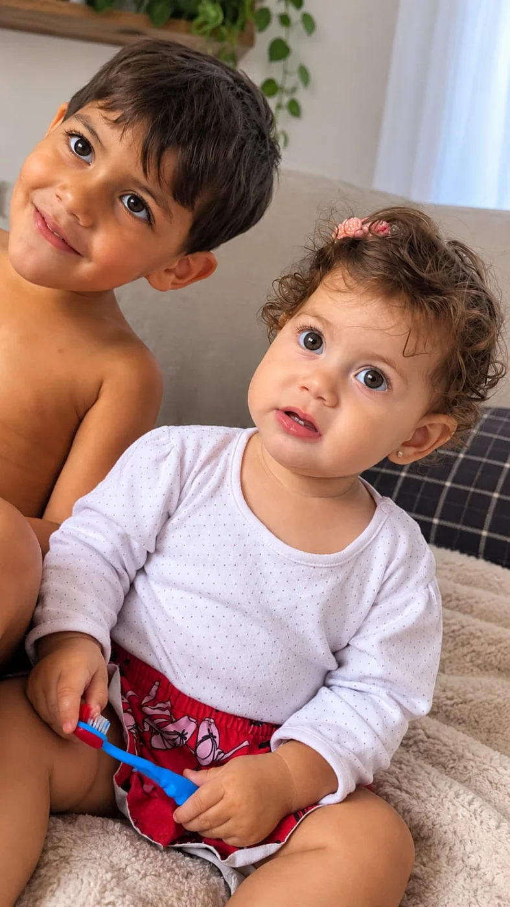
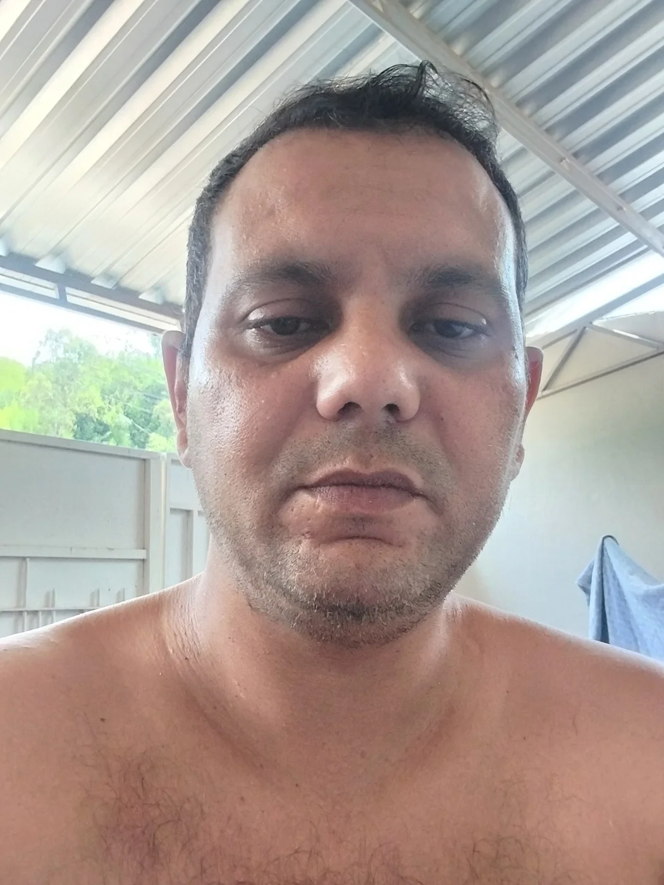

✚
Tratamento e acompanhamento
Buscar acesso a atendimento especializado, exames e cuidados necessários ao longo do período planejado.
Sou pai de duas crianças e convivo com a Poliarterite Nodosa (PAN). Meu maior desejo é buscar qualidade de vida e continuar presente nos momentos que realmente importam: os momentos com meus filhos.
Uma família unida por uma nova chance
A campanha busca viabilizar a mudança familiar para o Canadá e um período de seis anos de acompanhamento e tratamento médico. O objetivo é buscar mais estabilidade, cuidado e qualidade de vida.
Buscar acesso a atendimento especializado, exames e cuidados necessários ao longo do período planejado.
Viabilizar a mudança e a permanência da família como rede de apoio durante o tratamento.
Buscar melhores condições para viver a rotina, acompanhar o crescimento das crianças e compartilhar momentos juntos.

Conviver com uma doença rara e complexa muda a rotina, os planos e a forma de olhar para o futuro. Mas há algo que continua me dando forças: minha família.
Esta campanha é um pedido de apoio para construir uma nova etapa, com cuidados médicos e a presença das pessoas que amo. Não se trata de prometer uma cura, e sim de buscar uma oportunidade real de cuidado e qualidade de vida.
Apoiar esta jornada ♥A Poliarterite Nodosa (PAN) é uma vasculite rara que pode afetar artérias de médio calibre e diferentes órgãos. Cada caso exige avaliação individualizada por profissionais de saúde. Nesta campanha, o foco é buscar acompanhamento especializado e melhores condições de vida, sem prometer resultados clínicos.
A campanha busca apoio para a mudança familiar e seis anos de tratamento e acompanhamento. O detalhamento de custos e os documentos comprobatórios poderão ser publicados após validação.
Viabilizar o cuidado médico e a presença da família durante o período planejado.
Espaço reservado para relatórios, estimativas e comprovantes autorizados.
Confira o destinatário e o valor no aplicativo de pagamento antes de confirmar qualquer doação.
Cada gesto de solidariedade é importante. Selecione a moeda e o valor para visualizar o QR Code de doação.
Escolha um valor em dólares americanos:
Compartilhe esta campanha:
O QR Code é exibido conforme as imagens enviadas. O pagamento é realizado fora deste site, no aplicativo de sua preferência. Confira sempre os dados do destinatário.